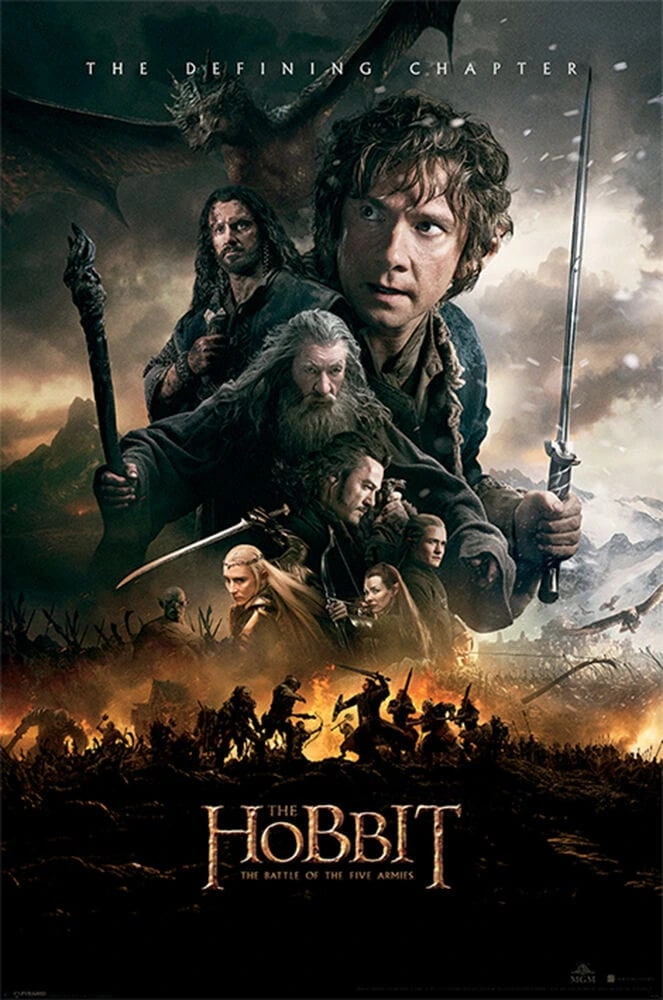

Ficha de la película
Año: 2014
Director: Peter Jackson
Novela: J.R.R. Tolkien
Duración: 144min
Saga: EL HOBBIT
Reparto principal:
Martin Freeman, Ian McKellen, Richard Armitage, Evangeline Lilly, Orlando Bloom, Luke Evans, Benedict Cumberbatch, Lee Pace, Cate Blanchett, Hugo Weaving, Christopher Lee, Billy Connolly, Ken Stott, Aidan Turner, Dean O'Gorman
Sinopsis
Al haber liberado al dragón Smaug sobre la Ciudad del Lago, los habitantes supervivientes y los elfos marchan hacia Erebor en busca de refugio y compensación. Sin embargo, Thorin, cegado por la "enfermedad del dragón" y la obsesión por la Piedra del Arca, se niega a negociar. Mientras enanos, elfos y hombres están a punto de enfrentarse en una guerra fratricida, inmensas huestes de orcos y trasgos enviadas por Sauron irrumpen en escena, obligando a las razas de la Tierra Media a unirse en una batalla colosal a los pies de la montaña.
Personajes que aparecen
Bilbo Bolsón · Gandalf · Thorin Escudo de Roble · Smaug · Bardo el Arquero · Thranduil · Legolas · Tauriel · Dáin Pie de Hierro · Azog el Profanador · Bolgo · Galadriel · Elrond · Saruman · Radagast
Lugares importantes
Erebor (La Montaña Solitaria) · Las Ruinas de Dale · Colina del Cuervo · Esgaroth destruida · Dol Guldur
Objetos importantes
Anillo ÚnicoLa Piedra del ArcaLa Armadura de Mithril de BilboLa Espada Orcrist Las Espadas de ThranduilCuriosidades
Última actuación de Christopher Lee: Esta fue la última película de Christopher Lee como Saruman antes de su fallecimiento en 2015. Debido a su avanzada edad, no pudo viajar a Nueva Zelanda y sus escenas fueron rodadas en Londres con croma verde.
El ejército digital: La batalla final requirió el diseño digital de miles de luchadores con armaduras totalmente personalizadas para cada facción (Elfos, Enanos de las Colinas de Hierro, Humanos y Orcos).
El verdadero nombre de la película: Originalmente la tercera entrega se iba a llamar El Hobbit: Partida y Regreso (There and Back Again), pero Peter Jackson decidió cambiarlo a La Batalla de los Cinco Ejércitos al sentir que el viaje ya había culminado en la segunda película y esta se centraba enteramente en el conflicto bélico.